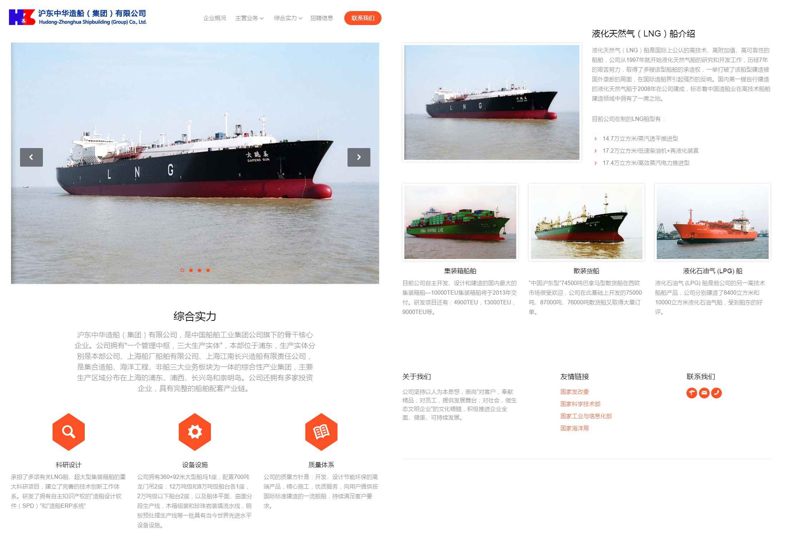
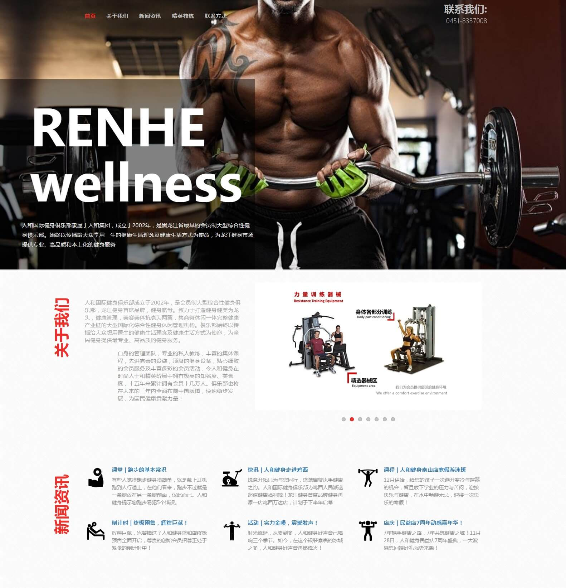
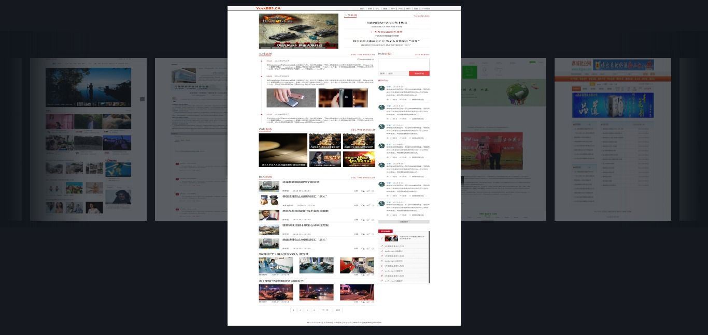
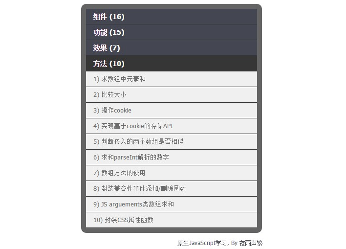
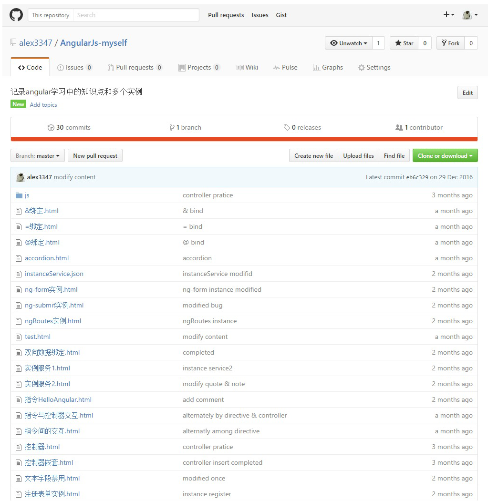

-
- Basic info. 基本信息
- 个人信息: 贠鹏 / 男
- 教育背景: 本科/哈尔滨工程大学(211)
- 英语水平: CET-6
- Blog: www.cnblogs.com/ztoz
- GitHub: github.com/alex3347
-
- Experience. 项目与工作经验
沪东中华造船(集团)有限公司（2016.6 - 至今 | 前端开发）
公司项目
-
公司内网新闻中心页
参与新闻中心页面的前端开发工作，根据设计图完成项目的大部分样式
使用PS进行切图，应用jQuery库进行前端开发
-
公司招聘宣传页
负责还原设计图页面以及JS代码的编写
应用Bootstap框架自适应布局 ，使用H5语义化标签以及SCSS，应用jQuery库，使用 Gulp搭建自动化环境

个人项目
-
jQuery.swiper 源代码 Demo
基于jQuery的轮播图插件，具备自定义轮播图数量、轮播速度、图片添加外链等功能
-
人和国际健身俱乐部官网 源代码
使用bootstrap进行自适应布局，应用框架内的部分组件还原设计图，根据设计图应用em进行弹性布局
 -
新闻类页面 Demo
实现了新闻类型网站首页、列表页、简介页、资讯页、图片页、图片详情页等页面，合理运用HTML语义化标签，并实现了多栏布局、瀑布流布局等布局样式,应用轮播等动态效果。
 -
原生JS常用功能库 源代码 Demo
原生JS常用功能库，其中包括对原生 JavaScript 数据类型及语言基础、DOM、事件、BOM、cookie等的操作，这个库中用原生方法实现了多种常用功能、效果。
 -
angular实例总结 源代码
记录angular学习中的知识点和多个实例。

-
- Skill. 技能清单
Web前端
-
HTML / CSS
熟练使用html+css，快速精确还原设计图，并且对主流浏览器做兼容性处理，完成较复杂的布局
熟悉Sass / Autoprefixer 等CSS预处理和后处理方法、工具
熟悉 Bootstrap流式布局实现响应式网页开发
-
JavaScript
熟练使用JavaScript、Jquery，可以脱离类库，用原生JS代码编写常见的网页特效
对Ajax交互，json和jsonp交互有较好的理解，了解http协议
了解angular开发单页面应用程序(SPA)
-
其他
熟悉Gulp前端自动化工具的使用
熟悉Git版本控制工具的使用
能用Photoshop工具进行切图等工作
后端
-
环境
了解Linux 开发环境，尝试过在vps上用LNMP建站
-
语言
对 php及C有简单了解
其他
-
2012年毕业后一直在这家公司，前几年在生产部门参与造船工作，2016年公司内部门调整，人员分流，我主动申请进入现在的信息所，从事前端开发工作
我负责更新公司内网近期新闻页，工作内容较单一，因此想离职寻找更好的平台
学习能力强，以上绝大多数的技能都是自学修得